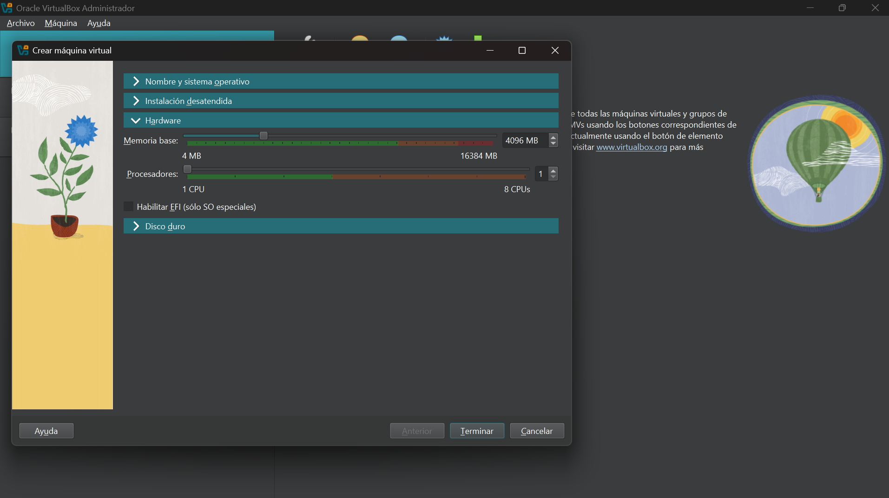
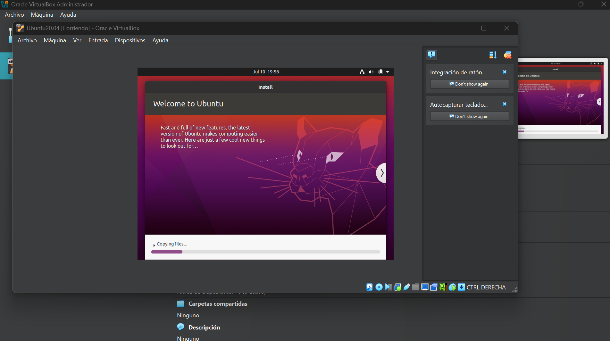

COURSE: Advanced Professional Linux - Virtual Machines with Ubuntu
Class Objectives:
- Understand the concept of virtualization.
- Install VirtualBox and its extensions.
- Create a new virtual machine in VirtualBox
- Configure the virtual machine network.
- Install the Ubuntu operating system.
Step 1: Installing VirtualBox
The first step was to download and install Oracle VirtualBox, the tool that will allow us to emulate different operating systems. The download was done from the official website. Once downloaded, it was installed and configured to begin the next step, creating our first virtual machine.

Screenshot: VirtualBox installation process on my host system.
Step 2: Configuring the Virtual Machine
Once we have given the name of our virtual machine, and selected the ISO (Ubuntu 20.04.6 OS image), we move on to assigning hardware, such as memory, processors, etc.
Screenshot: VirtualBox installation process on my host system.
Step 3: hard drive.
In this step, we select the amount of hard disk space we will assign to our virtual machine and complete the configuration.

Screenshot: VirtualBox installation process on my host system..
Step 4: Starting our Virtual Machine.
Here we start the machine, where our virtual machine will be created and opened, to proceed with the installation of our operating system, Ubuntu 20.04.6LTS.

Screenshot: VirtualBox installation process on my host system.
Step 5: Installing and configuring Ubuntu 20.04.6
Once our virtual machine is started, the operating system installation process will begin, and once completed, everything will be ready for use.
Screenshot: Ubuntu 20.04.6.LTS operating system installation process
This first session was crucial for understanding the basics of virtualization. Although installing the virtual machine was straightforward, setting up Ubuntu presented some initial challenges. I struggled with the command line terminal and also with the screen auto-scaling. These challenges allowed me to delve deeper into package management and configuring the Guest Additions CD. It's fascinating to see how I can replicate a server environment on my own machine.